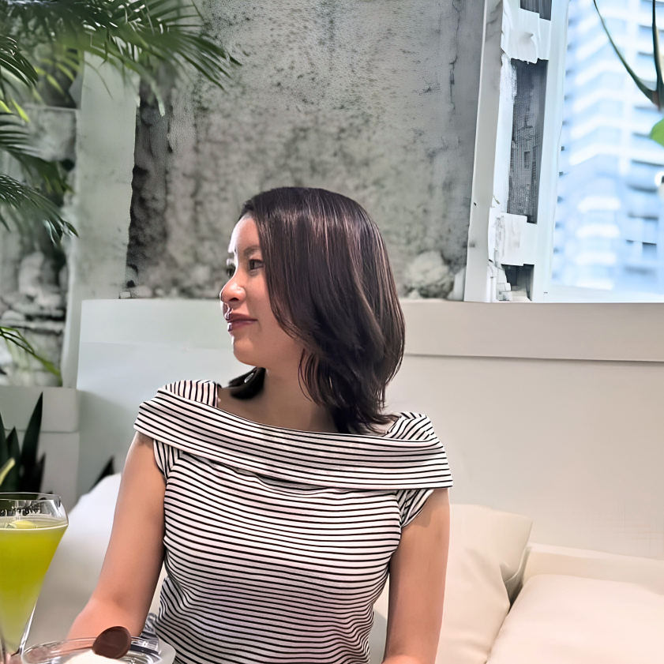

★★★★★
食べてはいけないという思い込みが消えました。むしろ食べることで体が整うってこんなに心地いいんだと感激しています。

秋本 るみ
食欲コンサルタント
Loyell 主宰
分子栄養学認定カウンセラー
20代の頃、私は摂食障害と診断されました。
食べては後悔し、食べないと罰のように感じる。
そんな日々の中で肌は荒れ果て、「なぜ自分はこんなにも意思が弱いのだろう」と毎日自分を責めていました。
「食欲は、体からのメッセージだった。」
転機となったのは分子栄養学との出会いでした。
鉄が足りないから、タンパク質が不足しているから、セロトニンが作れないから…。
食欲暴走の原因が栄養の欠如だとわかったとき、長年の自己嫌悪が一瞬で消えました。
以来、しっかり食べながら体質を整え、重い肌荒れも克服。
今では「食べることが自分を大切にすること」と
心から思えるようになりました。
この体験と知識を同じ苦しみを抱える方に届けたくて、Loyellを立ち上げました。
摂食障害から分子栄養学を経て辿り着いた知見を書籍化するプロジェクトをクラウドファンディングで進めています。
カロリーを減らすほど体は飢餓を感じ食欲を強めます。Loyellでは逆の発想——必要な栄養をしっかり摂ることで、食欲を根本から整えます。
鉄・亜鉛・タンパク質などの栄養で「空腹と満腹」の指令を正常化。栄養を満たすことで、食べても満足できない「偽の食欲」をリセットします。
無理な糖質制限ではなく、食べる順番が鍵。タンパク質や脂質から先に摂ることで血糖値を安定させ、甘いものへの衝動を自然に抑えます。
ストレス食いの原因「セロトニン不足」を、B6やマグネシウムなどの栄養で解消。食で心を埋めなくても、穏やかに過ごせる体質へ導きます。
分子栄養学のファスティングは、単なる絶食ではありません。腸の炎症を鎮めて吸収力を高め、少量でも活力が満ちる体を作ります。


お客様の声

感覚や経験則ではなく、栄養素レベルで食欲をコントロールする根拠のある方法をお伝えします。
摂食障害・重い肌荒れを経験した秋本るみが、同じ悩みを持つあなたに寄り添います。
体重−7kgという成果だけでなく、「内側から輝く美しさ」を手に入れた事例が実力の証です。
以下の場合はご参加をお断りすることがあります。あらかじめご了承ください。
ご不安な点は事前のLINE相談でお気軽にお尋ねください。